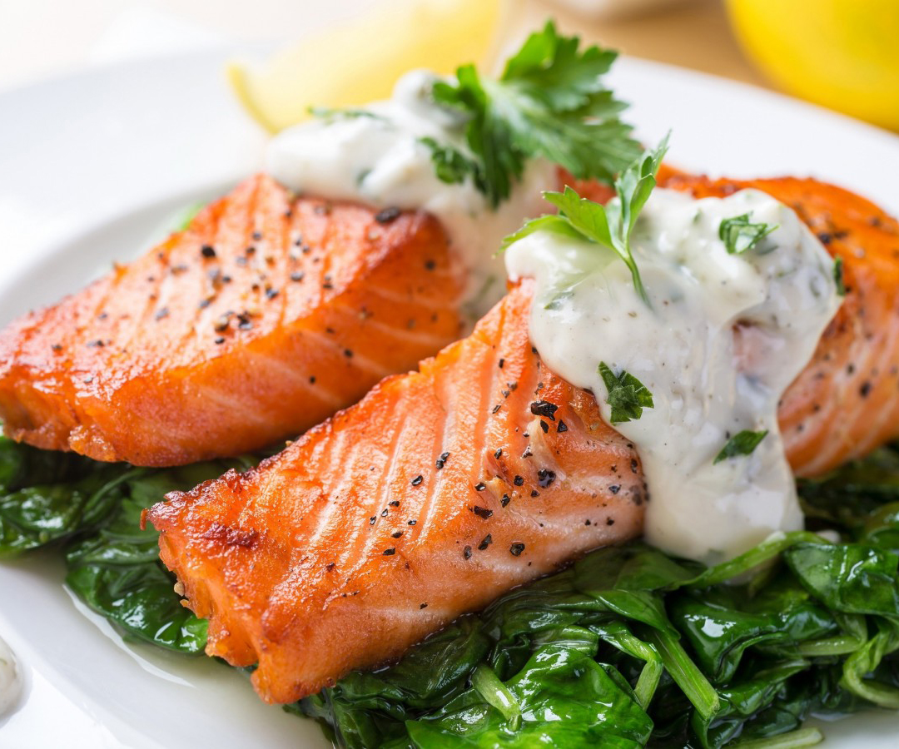
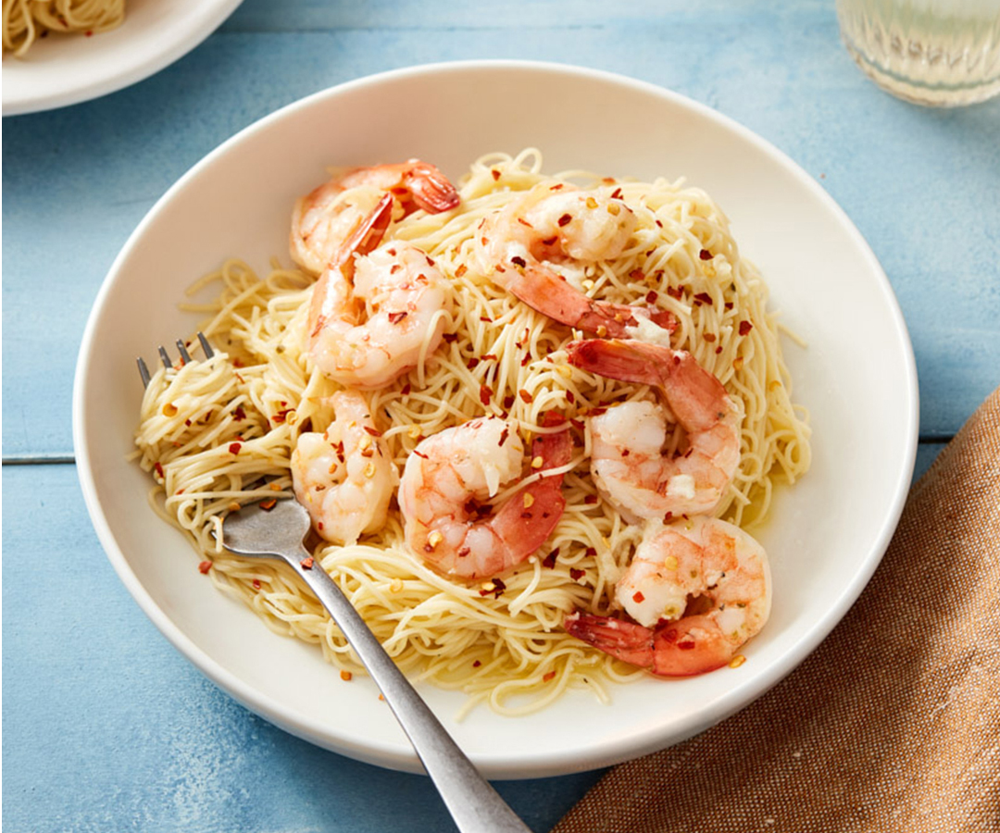
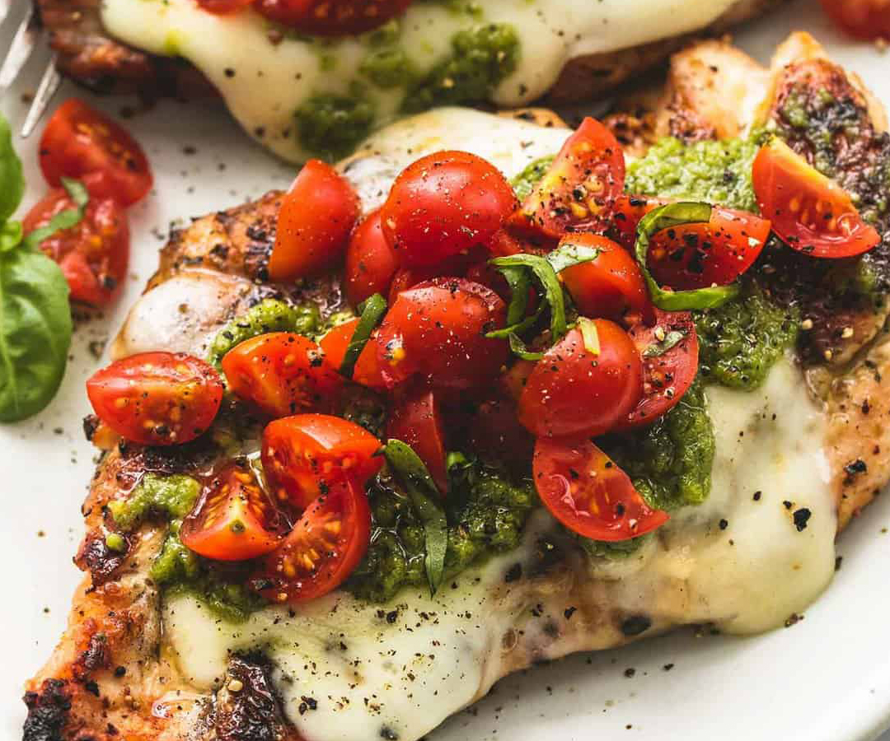
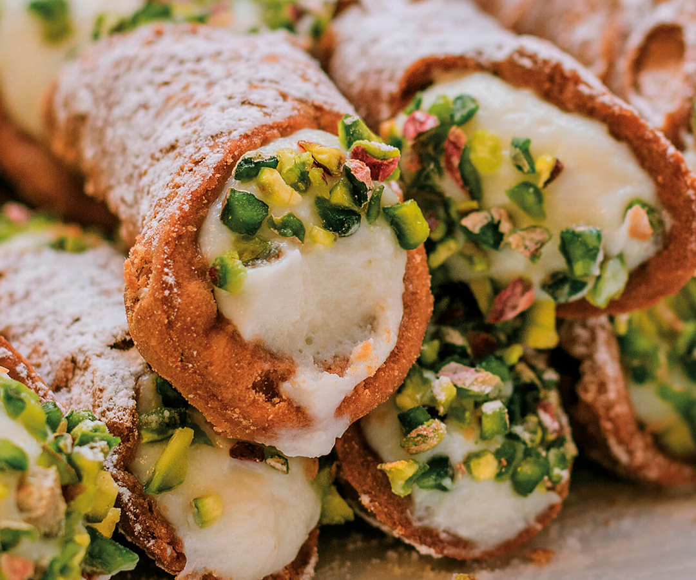

Directions
In a small bowl, combine 4-1/2 teaspoons rosemary, sage, pepper, lemon juice and oil. Drizzle over both sides of salmon steaks. Sprinkle the remaining rosemary over hot coals for added flavor.
Using long-handled tongs, moisten a paper towel with cooking oil and lightly coat the grill rack. Grill salmon, covered, over medium heat or broil 4 in. from the heat for 6-8 minutes on each side or until
fish flakes easily with a fork.

Herb-Grilled Salmon

Shrimp Scampi
Shrimp sautéed in a garlic sauce, tossed with asparagus.
Ingredients:
2 Tablespoons olive oil, 4 tablespoons butter
4-5 large garlic cloves, minced
1 1/4 pounds (600 grams) large shrimp prawns, shelled with tails on or off
Salt and fresh ground black pepper to taste
1/2 teaspoon crushed red pepper flakes or to taste (optional)
2 tablespoons lemon juice, 1/4 cup chopped parsley
Directions
Heat olive oil and 2 tablespoons of butter in a large pan or skillet. Add garlic and sauté until fragrant (about 30 seconds - 1 minute). Then add the shrimp, season with salt and pepper to taste and sauté for
1-2 minutes on one side (until just beginning to turn pink), then flip.
Pour in water, add red pepper flakes (if using). Bring to a simmer for 1-2 minutes or until water reduces by about half and the shrimp is cooked through (don't over cook your shrimp).
Stir in the remaining butter, lemon juice and parsley and take off heat immediately.
Serve over rice, pasta, garlic bread or steamed vegetables (cauliflower, broccoli, zucchini noodles).
Grilled chicken with mozzarella, basil, and a lemon garlic sauce.
Directions
Season the chicken breast with dried oregano, salt, and pepper. Preheat the oven to 400 F.,
Heat the olive oil in a large cast-iron skillet or sauté pan on medium-high heat. Add the chicken to the pan and brown it on both sides for three to five minutes.
Remove the chicken from the pan and place it on a plate. Turn down the heat, add the water to the pan, and deglaze it by scraping at the browned bits on the bottom. Add the butter, garlic and lemon juice
as well. Cook for two to three minutes, or until the butter is completely melted and the garlic is fragrant.
Add the chicken back to the pan and top each piece with an equal amount of the fresh mozzarella. Place it in the preheated oven until the top of the cheese is melted and slightly browned.
Top each chicken breast with an equal amount of the pesto, cherry tomatoes, and Parmesan cheese. Serve immediately with a side salad, pasta, or bread to make it a complete meal.

Grilled Chicken Margherita

Sicilian cannoli
Crisp tubes of golden fried dough filled with a creamy ricotta.
Ingredients:
1 egg, 1 egg yolk, 15 ml (1 tablespoon) white vinegar, 15 to 30 ml (1 to 2 tablespoons) water
375 ml (1 1/2 cups) unbleached all-purpose flour, 30 ml (2 tablespoons) icing sugar
5 ml (1 teaspoon) cocoa powder, 2.5 ml (1/2 teaspoon) cinnamon, 2.5 ml (1/2 teaspoon) salt, 30 ml (2 tablespoons) lard (or butter)
1 egg white, lightly beaten, Canola oil, for frying, 1 tub 400 g ricotta cheese, drained for 12 hours, 250 ml (1 cup) sugar, 5 ml (1 teaspoon) vanilla extract, 115 g (4 oz) chopped dark chocolate (or chocolate chips)
Icing sugar, for garnish
Directions
In a bowl, combine the egg, egg yolk, vinegar, and water. Set aside.
In a food processor, combine the flour, icing sugar, cocoa powder, cinnamon, and salt. Add the lard and mix thoroughly. Add the liquids and pulse until the dough forms into a ball. Add water, if needed.
On a work surface, knead the dough for 2 minutes. Cover with plastic wrap and let rest for 1 hour in the refrigerator.
Heat the oil in the deep fryer to 190 °C (375 °F). Line a baking sheet with paper towel.
On a floured work surface, divide the dough into four pieces and shape into rectangles to facilitate running through the pasta machine. Roll a rectangle of dough at a time, dusting with flour if it becomes sticky, up to thickness number 5. Place the rolled out dough rectangles onto the floured surface.
Cut into 10-cm (4-inch) squares. Wrap the dough around a cannoli mould. Layer 2 corners and stick together by brushing one side with the beaten egg white.
Fry 1 or 2 cannoli at a time for 1 to 2 minutes or until golden brown. Drain on the paper towel. Unmould the cannoli while still hot. Repeat with the remaining dough. Let cool completely.